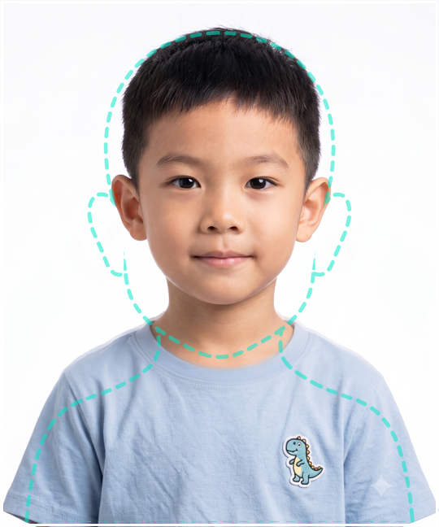

系統組成
本系統有兩個網頁，分工使用：
- iPad 拍照版（
ipad-camera.html）：在拍照現場用 iPad 拍攝、打包下載。
- 電腦編輯版（
index.html）：回電腦後批次匯入、套用學號更名、裁切、打包下載。
事先準備
- 請每個班級的學生依座號排列，依序拍照。
- 準備該班級的 Excel 檔，包含三欄並含標題：座號、姓名、學號（順序需與拍照順序一致）。可在電腦編輯版按「下載範例 Excel」取得格式範本。
| 座號 | 姓名 | 學號 |
|---|
| 1 | 王小明 | 110001 |
| 2 | 李小華 | 110002 |
| 3 | 陳大文 | 110003 |
A
在 iPad 拍照
- 請學生站在單色背景區前；iPad 對著學生，依螢幕上的人像參考框對齊頭肩位置再拍。儘量對準框，之後裁切會更方便、整齊。
- 一張一張拍。拍壞了沒關係，下方縮圖取消勾選即可不採用，直到全班拍完。
- 拍完後按「下載 ZIP 打包檔」，把 zip 存到 iPad 的「檔案」。
- 再透過分享到個人雲端、或寄到信箱等方式，把 zip 傳到電腦。

對齊參考框的正確取景示範（框與輪廓不會被拍進照片）
提醒：螢幕上的白框與青色人像輪廓只是定位用，不會出現在拍出來的照片裡；照片會自動裁成 1:1.2 的直式比例。光線要足、請學生別晃動，對焦穩定後再按快門（也可用藍牙快門遙控器，按鍵相當於 Enter／空白鍵）。
B
在電腦批次處理
- 在電腦中解壓縮剛才的照片 zip。
- 開啟電腦編輯版，批次匯入全部照片（依拍攝座號順序排列）。
- 從 Excel 檔把學生「學號」整欄（依座號順序）複製下來，貼到「批次更名欄位」；或直接用「從 Excel 匯入」讀取整份名單（會自動帶入學號，並在每張照片上顯示座號／姓名）。
- 務必完整對應照片中學生的座號：50 張照片就要有 50 列。對齊後按「套用名稱（依序）」完成更名。
- （可選）展開「批次裁切（邊緣）」微調裁切範圍。
- 按「下載 ZIP 打包檔」，即可得到命名好的學生照片，再批次上傳到學生卡網站。
對齊小技巧：若照片順序與名單不一致，可用每張照片卡片上的 ◀ ▶ 微調順序，或點「改名」單張修正。畫面也會顯示「偵測到幾行名稱、共幾張照片」方便你核對數量。
＋
替代方式：用電腦／筆電相機（webcam）直接拍
若現場沒有 iPad，也可以用筆電的內建相機，或桌機外接的 USB webcam，在電腦編輯版（index.html）直接拍照＋編輯，全程在同一台電腦完成、不需傳檔。
- （若用外接 webcam 請先接上再開啟頁面）開啟電腦編輯版，按右上的「📸 拍照」開啟相機；瀏覽器詢問相機權限時請按允許。
- 同樣對齊參考框、一張一張拍，下方縮圖勾選要用的，按「加入選取的照片」把照片帶進清單。
- 接著就與上面「在電腦批次處理」相同：從 Excel 匯入學號、套用更名、（可選）裁切，最後按「下載 ZIP 打包檔」。